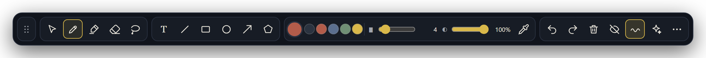
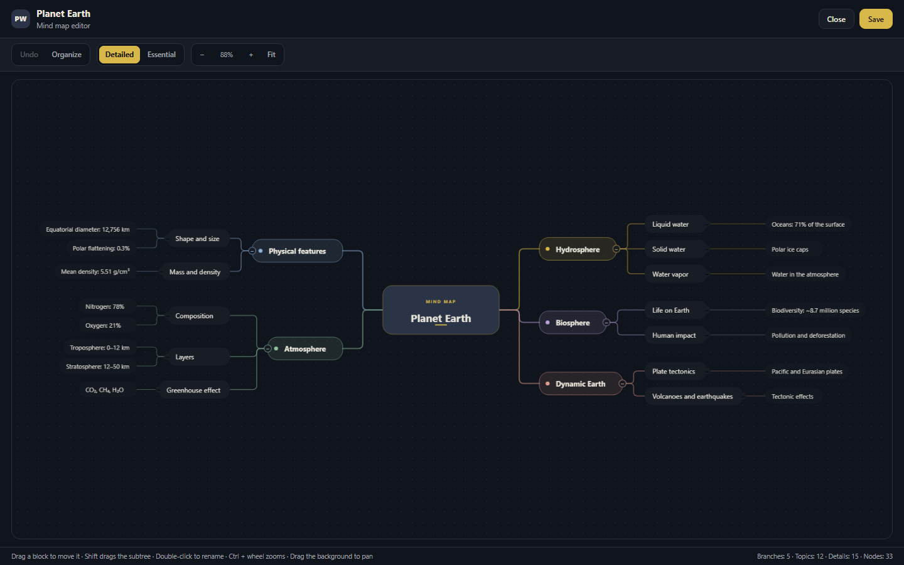
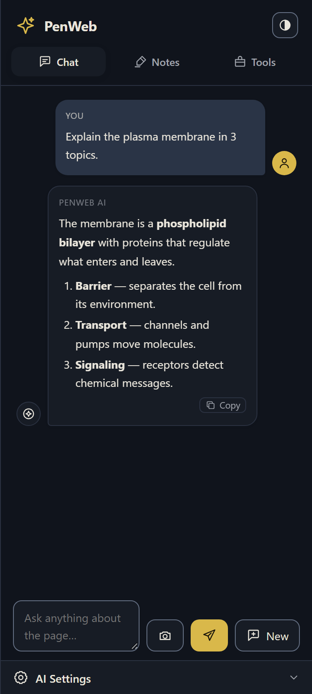
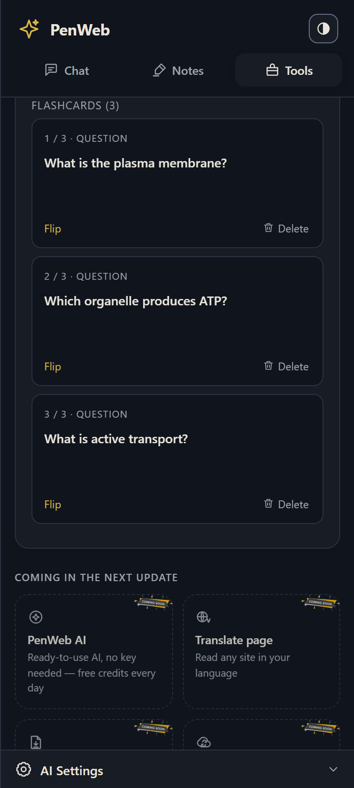

Install and activate
Add PenWeb from the Chrome Web Store and turn on the pen on the page you are studying.
Highlight, draw and ask on any page, PDF or video. The AI uses your material as context to explain, summarize, create flashcards and mind maps — with your key, right in the panel.
Free, no account. Built for students, exam candidates and medical residents.



Pen, highlights and AI work together in the side panel. No app switching, no losing context.
Built on the same extension: local, under your control and no subscription.
Pressure, four tips and a translucent highlighter right on the page. The stroke follows your drawing tablet and never interrupts the reading.
The cell is the basic unit of life. The plasma membrane controls what enters and leaves, while mitochondria transform energy and the nucleus stores genetic information.
The chat receives the page text and your highlights as context. Ask for an explanation, a summary or a comparison — the answer stays next to the material.
Open the map in a tab, drag the blocks, hold Shift to move a subtree and use Ctrl + wheel to zoom. The layout is yours — and positions are saved.
Turn your material into flashcards and summaries. The AI writes the questions; you decide when to flip a card and what to review again.

From the floating button to the mind map, without installing another app.
Add PenWeb from the Chrome Web Store and turn on the pen on the page you are studying.
Use the pen, the highlighter or select a passage. The floating toolbar follows your pace.
Open the chat, generate flashcards or organize a mind map. Positions and notes stay saved.
PenWeb asks for no account and charges no subscription. The AI uses the key you already have, and requests go from your browser straight to the provider you chose.
Connect OpenRouter, Google Gemini or Groq. The key stays in your browser.
Still unsure? Email us at dwlabs.penweb@gmail.com.
Open the PDF or video lecture in Chrome, activate PenWeb and use the highlighter or pen directly on the page, without changing the original file.
Yes. PenWeb draws a layer over the current page: it works on articles, online handouts, course platforms and YouTube video lectures.
Yes, it is free and asks for no account, email or login. Install it from the Chrome Web Store and start using it.
No. PenWeb uses your own API key (OpenRouter, Gemini or Groq). You pay the provider directly for what you use, with no PenWeb subscription.
No. Drawings, highlights and maps stay in your browser storage. When you run an AI action, only the necessary text is sent to the provider you configured.
Leave your email and receive access to the BYOK Final build even after the Chrome Web Store moves on to the next version.
Install PenWeb, turn on the pen and turn any page into review material.